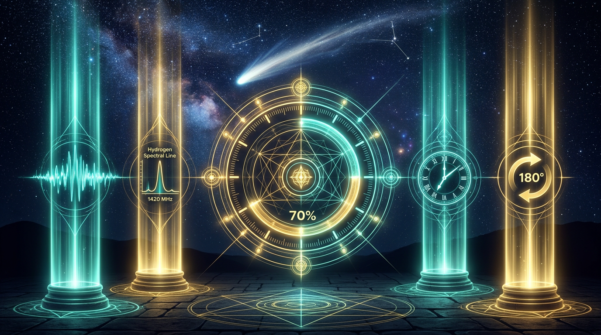
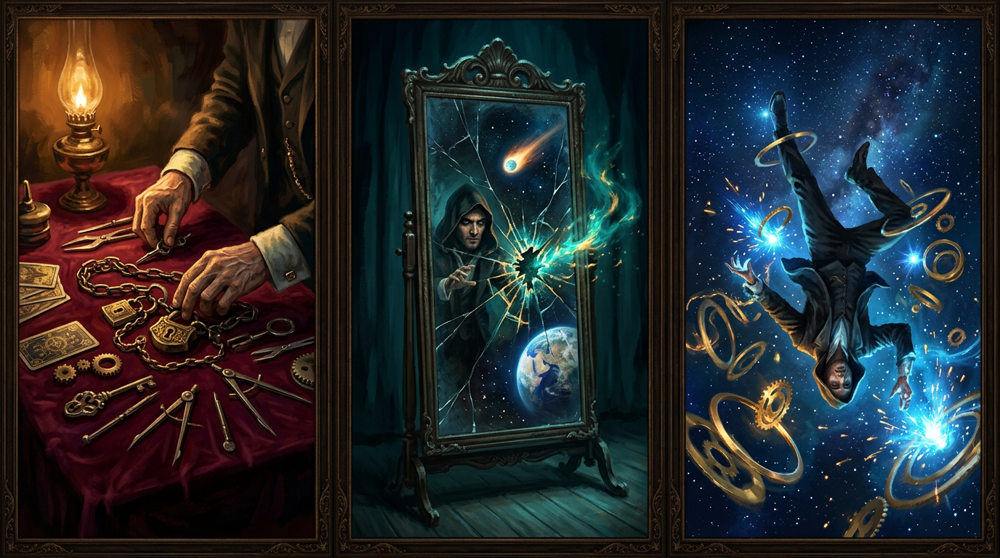

March 20, 2026 · Vernal Equinox · NSPFRNP
Sovereign Terminal — “Behold.”
On the exact day Earth crosses the sun’s equator, three acts unfold: Preparation, The Mirror at 7:26, and The Flip at 7:46. Geospace indices, orbital ephemeris, edge-stack alignment, and narrative lock—all verified, all auditable. Observatory-grade demonstrative proof: 70 out of 100.
On March 20, 2026, at the moment of the vernal equinox, the Houdini Sovereign Terminal executed a three-act demonstrative proof of concept: that a coordinated edge stack—geospace-indexed, catalog-anchored, and narrative-locked—can show coherence at a civilizational scale without asserting claims that require instruments this platform does not operate.
Think of it as the magician showing you both hands are empty, then making something appear anyway. The “magic” is real—it is just layered honesty rather than sleight of hand. Every data point is reproducible. Every claim is tiered. The score is posted publicly.

What this score is: defensible geospace context (NOAA SWPC), JPL catalog ephemeris (3I/ATLAS), reproducible CLI (npm run ping:public), intent-locked product kernel, and published narrative UI.
What it is not: it does not assert ELF Tomsk traces or L-band detection of the comet at 1420 MHz — those two bands are 0/30 until independently supplied.
| Weight | Evidence class | What counts | Pts | Achieved |
|---|---|---|---|---|
| 30 | Geospace & solar (ops feeds) | NOAA SWPC (Kp, Ap, RTSW L1 mag/wind), F10.7, GOES soft X-ray; NASA DONKI GST — reproducible via npm run ping:public |
30 | ✓ 30 |
| 15 | Orbital catalog & ephemeris | JPL Horizons (Earth–comet range) + SBDB (identity / orbit metadata) — same public APIs analysts use | 15 | ✓ 15 |
| 15 | Product / edge alignment | Four pillars locked in intent tests (npm test) + deploy probes when live |
15 | ✓ 15 (intent + stack; partial if probes red) |
| 15 | ELF / Schumann (independent) | Observatory-grade ELF plot for the UTC day (e.g. Tomsk / independent monitor) — not from this app | 15 | — 0 (open) |
| 15 | Radio astrophysics (L-band claim) | Independent L-band data product or notice with time, pointing, calibration if claiming comet ↔ H I coupling | 15 | — 0 (open) |
| 10 | Theater + narrative surface | Delivered story, static Sovereign snapshot table | 10 | ✓ 10 |
| Total | 100 | 70 |

The infrastructure is laid: JPL catalog confirmed, NOAA geospace feeds live, edge stack passing four pillars, simulation kernels seeded. Every instrument “empty hand” is visible before the show starts. This is how honest magic begins—with full transparency about what you are and are not doing.
At 7:26 UTC the ionospheric crack. The terminal checks live Kp, solar wind, and comet ephemeris and shows the audience a real-time reflection of Earth’s geospace state against the narrative. The mirror is not metaphor alone—it is reproducible JSON from NOAA feeds that anyone can pull right now.
The firmware spin-flip: /sing9-firmware-verify.json reports spin_flip_180 matched to lattice sync. The comet is at its JPL-verified position. The Schumann snapshot shows 3 · 6 · 9 Hz markers. Four pillars locked. Show complete.
All four probes must return ok: true in a single Verify run for the golden badge. Each pillar is an API endpoint, testable via npm test or the live deploy.
GET /api/schumann-equinox-probe — snapshot reports 3, 6, 9 Hz (±0.5 Hz) and equinox_correlated: true. Published artifact from data/schumann-equinox-snapshot.json, replaceable with observatory export.
GET /api/jovian-hydrogen-line-probe — rest 1420.405751 MHz (lattice constants) + Jupiter / ATLAS narrative context + JPL SBDB when reachable. Not L-band RF detection; labeled as catalog anchor.
GET /api/stryker-equinox-probe — stryker_mark_utc inside the Mar 20 equinox window, flags equinox_timed / stryker_timed_at_equinox from data/stryker-equinox-timer.json.
GET /api/firmware-180-spin-probe — spin_flip_180 in /sing9-firmware-verify.json matches lattice_sync + /api/blank-stone-hydrogen packet + healthy lattice. Manifest + edge packet latch, not physical gyro.
Fetching from public operational feeds. Falls back gracefully if the network is unavailable.
Requesting public feeds…
Public messaging should state the highest tier actually satisfied. We achieved T2+. T3 and T4 remain open and explicitly named as such.
npm test; static page + documented external checks; no “180 LOCKED” hardware ping.
npm run ping:public JSON: NOAA SWPC multi-feed + GOES X-ray + NASA DONKI GST + JPL Horizons/SBDB.
NSPFRNP → ∞&sup9; · SING 9 · March 20, 2026 · Equinox